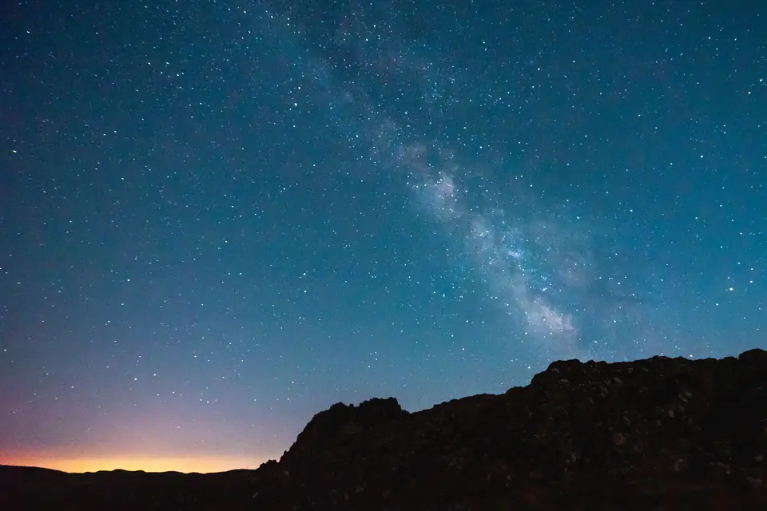

Natuurcoaching
Vertragen, voelen en weer richting vinden.
Aanbod
Er is geen vaste route naar rust, richting of verbinding. Ontdek welke vorm van begeleiding op dit moment bij jou past.
7 mogelijkheden
Vertragen, voelen en weer richting vinden.

Ruimte voor jouw verhaal en nieuwe inzichten.
Met aandacht voor wat je lichaam vertelt. Alleen voor vrouwen.

Stilstaan bij je energie en balans.
Samen ervaren, ontdekken en verbinden.
Tijd en ruimte om echt op adem te komen.
Natuur als inspiratie voor teams en leiders.
Voor organisaties
Ook voor teams, leidinggevenden en organisaties is er ruimte om te vertragen, elkaar te ontmoeten en nieuwe perspectieven te ontdekken.
Bespreek de mogelijkheden
Meer aandacht voor samenwerking en vertrouwen.
Ruimte voor reflectie en bewuste keuzes.
Een moment van rust en nieuwe energie.